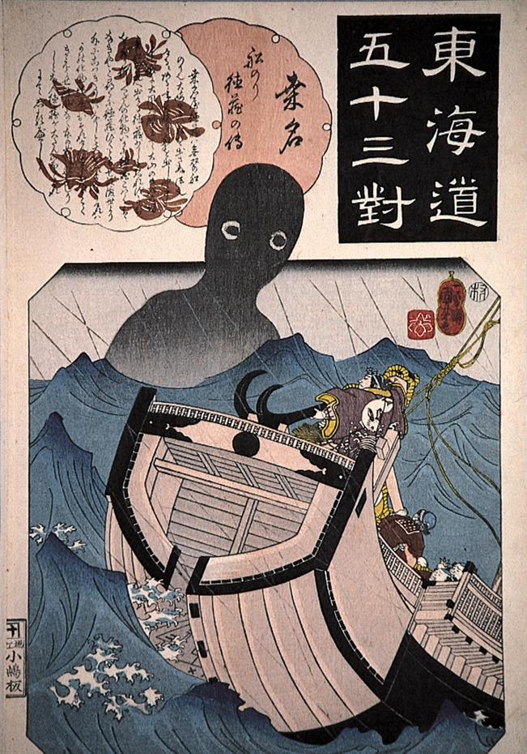

← 图鉴索引

桑名の沖合いに出現した巨大な人影。両目だけが描かれている。
著作者：歌川国芳／出典：親書誌：A80_prague_0007：東海道五十三対 桑名；トウカイドウゴジュウサンツギクワナ／日付：2011／資源識別子：A80_prague_0007_0001_0000
Copyright (c)2010- International Research Center for Japanese Studies, Kyoto, Japan. All rights reserved.